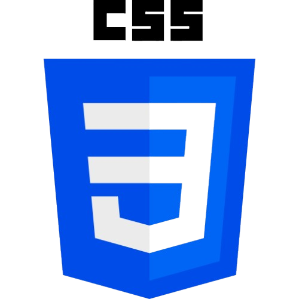
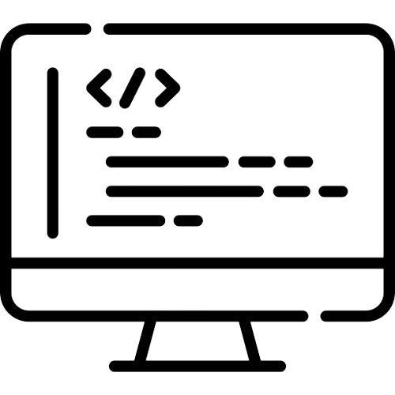

HISTORY
The history of web development spans several decades, evolving from simple static pages to complex, dynamic applications. Here's a timeline highlighting major milestones in web development.Web development has evolved dramatically since its inception, from simple, static HTML pages to complex, interactive web applications. This journey spans over three decades, with technological innovations continually shaping how websites and web apps are built and used. The evolution of web development reflects broader trends in computer science, internet accessibility, and the needs of a global digital society.
- Early Days of the Web (1990s)
1990 - 1995: Birth of the Web
- 1990:Tim Berners-Lee, a British scientist, invented the World Wide Web (WWW) while working at CERN. The web was intended to allow researchers to share information more efficiently.
- HTML (Hypertext Markup Language): Berners-Lee created HTML as the foundation for organizing documents with hyperlinks.
- HTTP (Hypertext Transfer Protocol) and URL (Uniform Resource Locator) were developed to provide the basic structure of the web.
- First Website: The first website, info.cern.ch, went live, serving as an informational page about the World Wide Web project.
1995-1999: The Rise of Browsers and Early Web Development
- Web Browsers: The introduction of Netscape Navigator (1994) and Internet Explorer (1995) popularized web access. These browsers made it easier for the general public to access websites.
- CSS (Cascading Style Sheets): While HTML structured content, CSS, introduced in 1996, allowed developers to separate content from design, giving websites more flexibility in appearance.
- JavaScript (1995): Initially developed by Netscape, JavaScript enabled interaction and dynamic content on web pages, allowing user interaction (like form validation, animations, etc.).
- The Dot-Com Boom and the Evolution of Web Development (2000s)
2000-2004: The Explosion of Websites and the Rise of Web 2.0
- xEarly 2000s: The dot-com boom led to an explosion in the number of websites. Companies like Google, Amazon, and eBay helped the internet become integral to everyday life.
- Web 2.0: Around 2004, the term "Web 2.0" emerged to describe a shift from static websites to more interactive, user-generated content. Websites became more dynamic with features like blogs, social networking (e.g., MySpace, Facebook), and video sharing (e.g., YouTube).
- AJAX (Asynchronous JavaScript and XML): In 2005, the advent of AJAX (used in Google Maps and Gmail) made it possible to create dynamic, responsive web applications where content could be updated without reloading the entire page.
- CSS 2 & 3: More refined styles and design options became available, improving layouts and animations.
2005-2009: Rise of Modern Frameworks and Content Management Systems
- 2005: Ruby on Rails, a web application framework, helped revolutionize the development of database-driven websites. It emphasized convention over configuration and introduced rapid development cycles.
- 2008: Google Chrome was released, introducing new features and better performance for web apps.
- Content Management Systems (CMS): Platforms like WordPress (2003) and Drupal (2001) gained popularity, allowing non-developers to create and manage websites with ease.
- Mobile Web and the Responsive Web (2010s)
2010-2014: Mobile-Friendly Web and Responsive Design
- Mobile Web Development: With the introduction of the iPhone (2007) and Android devices, mobile browsing exploded. Developers had to adapt to a mobile-first world, optimizing websites for smaller screens and slower mobile connections.
- Responsive Web Design: In 2010, Ethan Marcotte popularized the concept of "responsive web design" through an article and book. This approach allowed websites to adjust their layout and content depending on the device’s screen size.
- HTML5 and CSS3: The official specifications of HTML5 (2014) and CSS3 introduced features like native audio/video support, semantic tags, and CSS3 animations. These made websites more interactive and visually appealing without relying on plugins like Flash.
2015-2019: Web Apps and Front-End Frameworks
- JavaScript Frameworks: The 2010s saw a surge in popular front-end JavaScript frameworks, making complex web applications easier to build and maintain.
- Angular (2010): A comprehensive framework developed by Google for building dynamic single-page applications.
- React (2013): A component-based library created by Facebook, React revolutionized the way developers built user interfaces by focusing on reusable components and a virtual DOM for faster rendering.
- Vue.js (2014): A progressive JavaScript framework gaining popularity for its simplicity and flexibility.
- Single-Page Applications (SPA): With the rise of JavaScript frameworks, SPAs became more popular. These apps load content dynamically, offering users a more fluid experience (e.g., Gmail, Facebook).
- Node.js (2009): Node.js allowed developers to write JavaScript on both the client and server sides, creating a unified language for web development. This led to the rise of full-stack JavaScript development.
- Modern Web Development (2020s and Beyond)
2020-Present: The Growth of Web Technologies and Advancements
- Progressive Web Apps (PWAs): PWAs combine the best of web and mobile apps, providing offline functionality, push notifications, and fast load times.
- Serverless Computing: With serverless architectures, developers can focus on code rather than managing servers. Services like AWS Lambda and Azure Functions allow developers to run code in response to events without provisioning or managing servers.
- WebAssembly (Wasm): WebAssembly enables running high-performance code (often written in languages like C, C++, or Rust) directly in the browser, making it possible to build web applications with near-native performance.
- Jamstack Architecture: Jamstack is a modern web development architecture that decouples the front-end and back-end, focusing on static site generation and serverless functions. This is often paired with headless CMSs for more flexibility.
2020s:
- New JavaScript Frameworks and Tools: Continued evolution of frameworks such as Svelte (a compile-time framework), Next.js (a React-based framework for server-side rendering and static site generation), and Tailwind CSS (a utility-first CSS framework) highlight the trend toward developer productivity and streamlined codebases.
- API-First Development: The trend towards APIs (RESTful and GraphQL) continues to grow, making the back-end and front-end more decoupled, giving developers greater flexibility in how they manage and serve data.
Key Trends Shaping the Future:
- Artificial Intelligence (AI) & Automation: AI is being integrated into web development through tools for design, testing, and content creation.
- Web 3.0: The next evolution of the web, focusing on decentralization, blockchain technologies, and immersive experiences like Virtual Reality (VR) and Augmented Reality (AR).
- Ethical Web Development: The focus is growing on accessibility, data privacy, and sustainability in web development.
Conclusion:
Web development has come a long way from its inception, evolving from simple text documents to highly interactive, complex applications. The future of web development promises even more exciting changes, from AI-driven tools to the immersive possibilities of Web 3.0 and beyond.
Back to Top
WHAT IS WEB DEVELOPMENT?
Web development refers to the process of creating, building, and maintaining websites and web applications. It involves a wide range of tasks, including coding, design, content creation, and testing, all aimed at producing websites that are functional, visually appealing, and user-friendly. Web development can range from simple static pages to complex dynamic web applications that interact with users and databases in real time. In essence, web development is a multifaceted discipline that requires a blend of technical knowledge, creativity, and problem-solving skills.
Types of Web Development
Web development can be categorized into three primary areas: front-end development, back-end development, and full-stack development.
- Front-end Development:Front-end development, also known as client-side development, involves the design and implementation of the parts of a website that users directly interact with. It is everything that users see on their web browsers. This includes the layout, structure, and overall visual appearance of a website. Front-end developers use languages like HTML (HyperText Markup Language), CSS (Cascading Style Sheets), and JavaScript to create and enhance the user interface (UI). They ensure that a website is responsive, meaning it looks and functions well on a variety of devices such as desktops, tablets, and smartphones.
Additionally, front-end developers work with libraries and frameworks like React, Vue.js, and Angular to streamline the development process and create interactive elements like buttons, forms, and navigation menus.
- Back-end Development: Back-end development focuses on the server side of a web application. It deals with the creation of databases, server management, and handling the logic behind the scenes that supports the front-end. Back-end developers work with programming languages like PHP, Python, Ruby, Java, and Node.js to build the server-side functionality that allows a website to operate correctly.
A key component of back-end development is the management of databases, which store data for websites or web applications. Developers use database management systems (DBMS) like MySQL, PostgreSQL, MongoDB, or SQLite to store, retrieve, and manipulate data. Back-end developers also ensure that the server is secure, scalable, and can handle requests efficiently from the front end.
- Full-stack Development: Full-stack development is the combination of both front-end and back-end development. Full-stack developers are proficient in both areas, meaning they have the skills to design and implement the user interface as well as handle the server-side logic and database management. Full-stack developers are well-rounded and can take a project from start to finish, making them highly versatile in the web development industry.
Key Tools and Technologies in Web Development
Web development is a multifaceted discipline that requires a combination of different tools and technologies to create efficient, functional, and visually appealing websites and web applications. These tools and technologies help developers streamline the process of building, testing, and deploying web projects. Here’s a breakdown of some of the key tools and technologies used in web development:
- Frontend Development Technologies
These technologies deal with the user interface (UI) and user experience (UX), focusing on what the user interacts with directly.

- HTML (Hypertext Markup Language):The foundational language for creating webpages. It structures the content on the page.
- CSS (Cascading Style Sheets): Used to style the HTML content, controlling layout, color, typography, and responsiveness.
- JavaScript: The scripting language that allows for dynamic and interactive elements on a webpage. It is crucial for handling user interactions, animations, and asynchronous requests.
Frontend Frameworks and Libraries:
- React.js: A JavaScript library developed by Facebook for building interactive UIs. It’s component-based, making it reusable and efficient.
- Vue.js:A progressive JavaScript framework for building UIs and single-page applications. It's lightweight and flexible.
- Angular: A full-fledged front-end framework developed by Google for building dynamic web apps with features like two-way data binding, routing, and state management.
- SASS/LESS: CSS preprocessors that allow for more advanced CSS features like variables, nested rules, and mixins.

- Backend Development Technologies
Backend technologies handle the server-side logic, database interaction, and data processing.
- Node.js: A JavaScript runtime that allows running JavaScript on the server side. It’s event-driven and non-blocking, making it efficient for I/O-heavy tasks.
- Express.js: A minimal and flexible Node.js web application framework used for building web servers and APIs.
Other Backend Languages:
- Python: Popular for its simplicity and readability. Frameworks like Django and Flask are used to build web applications.
- Ruby on Rails: A full-stack framework built on Ruby, known for its speed in development and convention over configuration approach.
- PHP:A widely-used server-side scripting language, often used with frameworks like Laravel or Symfony for building dynamic websites.
- Java (Spring Boot): A popular language for enterprise-level applications. Spring Boot is a framework that simplifies the development of Java-based web applications.

- Databases
Databases store and retrieve data for websites and applications.
SQL (Structured Query Language):
- MySQL:A widely-used relational database management system (RDBMS).
- PostgreSQL:An advanced open-source RDBMS known for its robustness, performance, and support for advanced features.
NoSQL:
- MongoDB: A document-based NoSQL database, known for its flexibility and scalability.
- Cassandra:A NoSQL database designed for handling large amounts of data across many servers.

- Version Control
Version control systems track changes to source code and facilitate collaboration among developers.
- Git: A distributed version control system that helps developers manage and track changes in their code.
- GitHub/GitLab/Bitbucket: Platforms for hosting Git repositories, enabling collaboration, code sharing, and version control in teams.
- Web Hosting and Deployment
These tools are used to deploy web applications to production servers.
- Heroku:A platform-as-a-service (PaaS) that enables easy deployment of web apps in various languages.
- Netlify: A platform for deploying static sites and serverless functions, often used in JAMstack architectures.
- Vercel: A platform for frontend developers that allows for quick deployment and hosting of static websites or serverless applications.
- APIs (Application Programming Interfaces)
APIs allow different software applications to communicate with each other. They're essential for integrating external services and building web applications.
- RESTful APIs: A common architectural style for building APIs, which rely on HTTP methods like GET, POST, PUT, and DELETE.
- GraphQL:A query language for APIs, offering more flexible and efficient data retrieval than REST.
- Web Frameworks
Web frameworks help speed up the development of web applications by providing reusable code, tools, and structure
- Django:A high-level Python framework that encourages rapid development and clean, pragmatic design.
- Flask: A lightweight Python framework for smaller applications or microservices.
- Ruby on Rails: A full-stack framework for building web applications with Ruby.
- Responsive Design ToolsThese tools ensure that websites work across devices (mobile, tablet, desktop).
- Bootstrap: A front-end framework with pre-built components for responsive web design.
- Tailwind CSS:A utility-first CSS framework that allows developers to quickly style their sites with predefined classes.
- Media Queries:CSS techniques used to adapt the layout based on the device’s screen size.
- DevOps Tools and Continuous Integration/Continuous Deployment (CI/CD)
These tools support automated testing, deployment, and maintaining development pipelines.
- Docker:A platform for developing, shipping, and running applications inside containers, making it easy to deploy and scale.
- Jenkins: A popular automation server for building, testing, and deploying code continuously.
- Travis CI/CircleCI:CI/CD services that automate testing and deployment workflows for code.
- Testing Tools
Web development requires extensive testing to ensure a smooth user experience.
- Jest:A testing framework for JavaScript, often used for unit testing React applications.
- Mocha/Chai: A JavaScript testing framework and assertion library for testing server-side applications (e.g., Node.js).
- Cypress/Selenium: Used for end-to-end testing, particularly for UI and browser interaction.
- Web Performance Optimization Tools
These tools help ensure that web applications load quickly and efficiently.
- Lighthouse:A tool by Google for auditing performance, accessibility, and SEO of web pages.
- Webpack: A module bundler for JavaScript that compiles code and assets to optimize performance.
- Google PageSpeed Insights:A tool that analyzes the content of web pages and provides suggestions to improve load times and performance.
- Security Tools
Security is a top priority in web development to protect user data and prevent attacks.

- OWASP (Open Web Application Security Project):A set of guidelines and tools for securing web applications.
- SSL/TLS (HTTPS): Security protocols to ensure encrypted communication between the client and the server.
- JWT (JSON Web Tokens): Used for securely transmitting information between parties as a JSON object, typically for authentication.
- Content Management Systems (CMS)
These tools allow developers and content creators to manage web content with minimal coding.
- WordPress: A widely-used CMS that powers a large number of websites, often with themes and plugins for added functionality.
- Joomla! and Drupal: Other popular CMS platforms for building dynamic websites.
Conclusion
Web development is a vast field that combines various technologies to create user-friendly and efficient websites. Depending on the scope of the project, developers can mix and match these tools to build robust and scalable web applications.
Back to Top